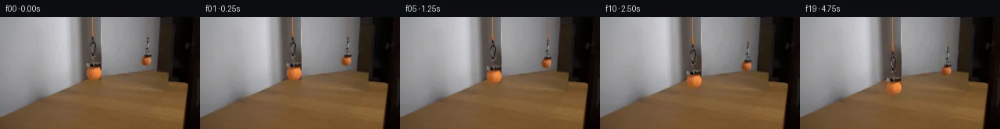

![首帧]()

Round 00
2026-11-05T12:46:52.012428+00:00像素候选变化代码 +317/−0inspection 更新
pixels 197f1ced248d1585 · code 6204fd9e685593de
查看本轮 generate.py 真实 diff
--- previous/generate.py
+++ current/generate.py
@@ -0,0 +1,317 @@
+"""Local source-pixel animation. No model, renderer, or external scene input."""
+from pathlib import Path
+import json
+import math
+import numpy as np
+from PIL import Image, ImageDraw
+import cv2
+from scipy.ndimage import map_coordinates
+import artifact_io
+
+ROOT = Path(__file__).resolve().parent
+W, H = 256, 144
+S = 4
+ORIGINAL = np.asarray(Image.open(ROOT / 'first_frame.png').convert('RGB'))
+I = ORIGINAL.astype(np.float32)
+Y, X = np.mgrid[:H, :W].astype(np.float32)
+
+
+def shape_mask(paths=(), polygons=(), ellipses=(), rectangles=()):
+ image = Image.new('L', (W*S, H*S))
+ d = ImageDraw.Draw(image)
+ for pts, width in paths:
+ pts = [(round(x*S), round(y*S)) for x, y in pts]
+ d.line(pts, fill=255, width=round(width*S), joint='curve')
+ r = width*S/2
+ for x, y in pts:
+ d.ellipse((x-r, y-r, x+r, y+r), fill=255)
+ for p in polygons:
+ d.polygon([(round(x*S), round(y*S)) for x, y in p], fill=255)
+ for a in ellipses:
+ d.ellipse(tuple(round(v*S) for v in a), fill=255)
+ for a in rectangles:
+ d.rectangle(tuple(round(v*S) for v in a), fill=255)
+ return np.asarray(image.resize((W, H), Image.Resampling.LANCZOS), dtype=np.float32)/255
+
+
+front_cord_support = shape_mask(paths=[([(117.9, -2), (117.8, 14), (117.5, 19), (118.4, 24.8)], 3.4)])
+front_hook_support = shape_mask(
+ paths=[
+ ([(118.4, 24.5), (118.0, 28.0), (118.5, 31.8)], 3.5),
+ ([(119.2, 31.5), (117.3, 32.5), (116.0, 34.8), (115.6, 37.2),
+ (116.7, 40.5), (117.1, 44.2), (118.4, 47.6), (119.7, 48.0),
+ (120.7, 44.8), (121.6, 40.3), (122.0, 36.0), (121.5, 33.7), (119.2, 31.5)], 3.0),
+ ([(118.9, 47), (118.1, 50.5), (118.0, 52.0)], 2.5),
+ ([(119.6, 47), (121.2, 49.0), (123.1, 51.0), (123.1, 54.0),
+ (122.7, 56.5), (120.6, 57.8), (119.3, 59.3)], 3.4),
+ ],
+)
+front_cap_support = shape_mask(polygons=[[(110.0, 58.5), (118, 57.8), (129.0, 58.0),
+ (130, 63.0), (126.0, 65.3), (112, 64.3)]])
+front_ball_support = shape_mask(ellipses=[(109.5, 62.4, 131.0, 82.1)])
+reflection_cord_support = shape_mask(paths=[([(190.7, -2), (190.3, 9), (189.1, 20), (189.0, 25.5)], 2.8)])
+reflection_hook_support = shape_mask(
+ paths=[
+ ([(189.0, 25.5), (188.4, 28), (188.5, 32.0), (187.8, 35.0)], 2.8),
+ ([(188.9, 31.0), (190.0, 33.8), (189.4, 38.2), (187.4, 41.5),
+ (186.1, 41.0), (187.3, 37.3), (188.1, 34.4)], 2.4),
+ ([(186.3, 40.8), (189.4, 40.5), (190.1, 43.0), (188.6, 45.0), (187.0, 48.5)], 2.8),
+ ],
+)
+reflection_cap_support = shape_mask(polygons=[[(183.0, 47.4), (188.0, 46.7), (193.7, 48.0),
+ (194.4, 51.1), (190, 52.9), (182.5, 51.6)]])
+reflection_ball_support = shape_mask(ellipses=[(179.2, 49.3, 195.0, 64.1)])
+front_support = np.maximum.reduce([front_cord_support, front_hook_support, front_cap_support, front_ball_support])
+reflection_support = np.maximum.reduce([reflection_cord_support, reflection_hook_support,
+ reflection_cap_support, reflection_ball_support])
+full_support = np.maximum(front_support, reflection_support)
+
+# Telea is a local pixel inpainting operation; it supplies wall colors behind thin
+# wires and behind the reflection. The larger front ball crosses two materials,
+# so its background is reconstructed separately rather than smoothing that edge.
+inpaint_mask = (full_support > .04).astype(np.uint8)*255
+candidate = cv2.inpaint(ORIGINAL, inpaint_mask, 3.0, cv2.INPAINT_TELEA).astype(np.float32)
+
+# Continue the dim wall to the left of the fixed vertical tonal edge at x=129.
+# Every sample is from the original image. The right-hand wall endpoint comes
+# from the unobscured strip above the ball. Preserve its horizontal falloff.
+wall_left = np.stack([np.interp(Y[:, 0], np.arange(H), I[:, 109, c]) for c in range(3)], -1)
+wall_right = np.array([65.5, 52.0, 43.0], dtype=np.float32)
+ramp = np.clip((X-109)/19.0, 0, 1)
+wall = wall_left[:, None, :]*(1-ramp[..., None]) + wall_right*ramp[..., None]
+# A tiny stationary edge at x=129 and the brighter surface at x=130.
+wall[:, 129] = np.array([72.0, 57.0, 49.0])
+for x in (130, 131):
+ wall[:, x] = I[:, x+1] + np.array([3.0, 1.0, 1.0])
+
+# Copy nearby wood grain along columns and compensate its gentle brightness
… diff truncated; 230 more lines …